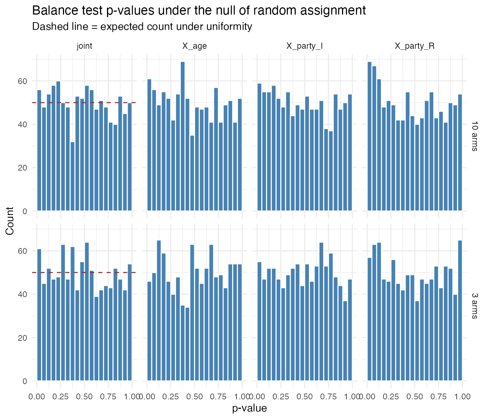

Balance testing in a three-arm trial
Consider a simple experiment with three treatment arms (Control, T1, T2), one continuous covariate (age), and one categorical covariate (party ID). Under random assignment, covariates should be independent of treatment, so balance tests should only reject at the nominal rate.
check_balance() returns two sets of tests:
covariate-by-covariate F-tests (regressing each covariate on treatment
dummies) and a joint test of all covariates simultaneously.
set.seed(42)
dat <- fabricate(
N = 200,
X_age = rnorm(N, 50, 10),
X_party = sample(c("D", "R", "I"), N, replace = TRUE),
Z = complete_ra(N, conditions = c("Control", "T1", "T2"))
)
res <- check_balance(dat, Z, covariates = c("X_age", "X_party"), quiet = FALSE)
#> Covariate-by-covariate balance tests:
#> # A tibble: 3 × 8
#> covariate level F_stat statistic df1 df2 p_value nobs
#> <chr> <chr> <dbl> <chr> <int> <int> <dbl> <int>
#> 1 X_age NA 1.10 F 2 197 0.336 200
#> 2 X_party I 2.31 F 2 197 0.102 200
#> 3 X_party R 0.713 F 2 197 0.491 200
#>
#> Joint balance test:
#> # A tibble: 1 × 10
#> F_stat statistic df1 df2 p_value p_value_classical nobs obs_per_param
#> <dbl> <chr> <int> <int> <dbl> <dbl> <int> <dbl>
#> 1 1.32 LR/df 6 NA 0.243 NA 200 33.3
#> # ℹ 2 more variables: status <chr>, estimable <lgl>For multi-armed treatments, the covariate-by-covariate tests are
F-tests with K - 1 numerator degrees of freedom (jointly
testing all treatment dummies). The joint test uses a multinomial
likelihood-ratio test: it fits a multinomial logistic regression of
treatment on all covariates via nnet::multinom and compares
to an intercept-only model.
Calibration under the null
Under the null of random assignment, a well-calibrated test should reject at rate when tested at level . We check this by simulation, varying the number of treatment arms and the sample size.
The quantity that governs the joint test is not the number of arms on its own. The multinomial model estimates coefficients, where is the number of model-matrix columns the covariates expand to, and the chi-squared reference distribution for the likelihood-ratio statistic is asymptotic in . Two of the three designs below are comfortable on that ratio and one is not.
balance_handler <- function(data) {
res <- check_balance(data, Z, covariates = c("X_age", "X_party"), quiet = TRUE)
bind_rows(
res$covariate_tests |>
transmute(
term = ifelse(is.na(level), covariate, paste0(covariate, "_", level)),
estimate = F_stat,
p.value = p_value
),
res$joint_test |>
transmute(term = "joint", estimate = F_stat, p.value = p_value)
)
}Three-arm trial
design_3arm <-
declare_model(
N = 200,
X_age = rnorm(N, 50, 10),
X_party = sample(c("D", "R", "I"), N, replace = TRUE)
) +
declare_assignment(
Z = complete_ra(N, conditions = c("Control", "T1", "T2"))
) +
declare_estimator(
handler = label_estimator(balance_handler),
label = "balance_test"
)
set.seed(343)
sims_3arm <- simulate_design(design_3arm, sims = 1000) |>
mutate(K = 3)Ten-arm trial
design_10arm <-
declare_model(
N = 500,
X_age = rnorm(N, 50, 10),
X_party = sample(c("D", "R", "I"), N, replace = TRUE)
) +
declare_assignment(
Z = complete_ra(N, conditions = paste0("T", 1:10))
) +
declare_estimator(
handler = label_estimator(balance_handler),
label = "balance_test"
)
set.seed(343)
sims_10arm <- simulate_design(design_10arm, sims = 1000) |>
mutate(K = 10)Eight arms in a small sample
The same eight-arm structure on 150 respondents, with five candidate covariates rather than two. The covariates expand to six model-matrix columns, so the multinomial model estimates coefficients from 150 observations: a ratio of roughly 3.6 observations per coefficient.
thin_handler <- function(data) {
res <- check_balance(data, Z, covariates = paste0("X_", 1:5), quiet = TRUE)
bind_rows(
res$covariate_tests |>
transmute(
term = ifelse(is.na(level), covariate, paste0(covariate, "_", level)),
estimate = F_stat,
p.value = p_value
),
res$joint_test |>
transmute(term = "joint", estimate = F_stat, p.value = p_value)
)
}
design_thin <-
declare_model(
N = 150,
X_1 = rnorm(N),
X_2 = sample(c("D", "R", "I"), N, replace = TRUE),
X_3 = rnorm(N),
X_4 = rnorm(N),
X_5 = rnorm(N)
) +
declare_assignment(
Z = complete_ra(N, conditions = paste0("T", 1:8))
) +
declare_estimator(
handler = label_estimator(thin_handler),
label = "balance_test"
)
set.seed(343)
sims_thin <- simulate_design(design_thin, sims = 1000)
sims_thin |>
group_by(test = ifelse(term == "joint", "joint", "covariate")) |>
summarize(
n_estimable = sum(!is.na(p.value)),
rejection_rate = mean(p.value <= 0.05, na.rm = TRUE),
.groups = "drop"
)
#> # A tibble: 2 × 3
#> test n_estimable rejection_rate
#> <chr> <int> <dbl>
#> 1 covariate 6000 0.0895
#> 2 joint 1000 0.094The joint test rejects at roughly twice the nominal rate. The likelihood-ratio statistic is biased upward in small samples and dividing it by its degrees of freedom does not remove the bias, so the test rejects too often exactly where a researcher most wants reassurance.
The covariate-by-covariate tests are also above nominal here, which the three-arm and ten-arm designs above did not reveal. That is the same mechanism rather than a second one. With eight arms, each covariate test is an F-test with seven numerator degrees of freedom, not one, and on 150 respondents split across eight arms there are about 19 observations per arm to estimate them from. Per covariate the rates run from 0.065 to 0.113:
sims_thin |>
filter(term != "joint") |>
group_by(term) |>
summarize(rejection_rate = mean(p.value <= 0.05, na.rm = TRUE), .groups = "drop")
#> # A tibble: 6 × 2
#> term rejection_rate
#> <chr> <dbl>
#> 1 X_1 0.065
#> 2 X_2_I 0.102
#> 3 X_2_R 0.113
#> 4 X_3 0.089
#> 5 X_4 0.08
#> 6 X_5 0.088So the lesson is about degrees of freedom rather than about which test you picked. A covariate-by-covariate test is well calibrated when treatment is binary, because it is then a single-degree-of-freedom test. Add arms and it becomes a multi-degree-of-freedom test subject to the same small-sample problem as the joint test.
Results
sims <- bind_rows(sims_3arm, sims_10arm)
rejection_rates <-
sims |>
group_by(K, term) |>
summarize(
rejection_rate = mean(p.value <= 0.05),
mean_F = mean(estimate),
.groups = "drop"
) |>
mutate(nominal_rate = 0.05)
rejection_rates
#> # A tibble: 8 × 5
#> K term rejection_rate mean_F nominal_rate
#> <dbl> <chr> <dbl> <dbl> <dbl>
#> 1 3 X_age 0.046 1.01 0.05
#> 2 3 X_party_I 0.055 1.04 0.05
#> 3 3 X_party_R 0.057 1.08 0.05
#> 4 3 joint 0.061 1.03 0.05
#> 5 10 X_age 0.061 1.04 0.05
#> 6 10 X_party_I 0.059 1.04 0.05
#> 7 10 X_party_R 0.069 1.06 0.05
#> 8 10 joint 0.056 1.01 0.05The covariate-by-covariate tests sit at the nominal 5% rate in both designs, and so does the joint test. Read that as a statement about these two designs rather than about arms in general: the three-arm design has about 33 observations per estimated coefficient and the ten-arm design about 19, both comfortable. A wider sweep at 2000 simulations per cell shows the ratio, not the arm count, doing the work.
| columns | rejection rate | ||||
|---|---|---|---|---|---|
| 2000 | 3 | 3 | 6 | 333 | 0.052 |
| 500 | 3 | 3 | 6 | 83 | 0.053 |
| 200 | 3 | 3 | 6 | 33 | 0.048 |
| 500 | 10 | 3 | 27 | 19 | 0.060 |
| 200 | 10 | 3 | 27 | 7.4 | 0.069 |
| 100 | 4 | 6 | 18 | 5.6 | 0.082 |
| 150 | 8 | 6 | 42 | 3.6 | 0.095 |
Rejection is monotone in and enters only through . Above roughly 30 observations per coefficient the test is at nominal; below about 10 it is anti-conservative enough to mislead. Adding arms hurts because it multiplies , and so does adding covariates; a ten-arm trial with a large sample is fine and a four-arm trial with five covariates on 100 respondents is not.
sims_plot <- sims |> mutate(K = paste0(K, " arms"))
expected_df <- sims_plot |>
filter(term == "joint") |>
group_by(K, term) |>
summarise(expected = n() / 20, .groups = "drop")
sims_plot |>
ggplot(aes(x = p.value)) +
geom_histogram(breaks = seq(0, 1, 0.05), fill = "steelblue", color = "white") +
geom_hline(data = expected_df, aes(yintercept = expected),
linetype = "dashed", color = "firebrick") +
facet_grid(K ~ term) +
labs(x = "p-value", y = "Count",
title = "Balance test p-values under the null of random assignment",
subtitle = "Dashed line = expected count under uniformity") +
theme_minimal()
Randomization inference for clustered designs
Clustering breaks the parametric joint test, and breaks it worse than
a thin sample does. In a 30-cluster design with three individual-level
covariates, the joint test rejects at 12.8% against a
nominal 5% even when clusters and
se_type = "CR2" are supplied.
The denominator degrees of freedom are not the problem, so there is nothing to correct. Substituting the number of clusters for the residual degrees of freedom moves the rejection rate from 11.4% to 11.2%, and a chi-squared reference gives 14.5%. The cluster-robust variance estimator is itself biased downward here, because treatment is constant within a cluster: the effective sample size for regressing a cluster-constant treatment on individual-level covariates is the number of clusters, not the number of respondents.
Supplying a declaration replaces the parametric
reference distribution with the randomization distribution under the
declared assignment mechanism, using the same multinomial LR statistic.
In the same 30-cluster design that rejects at 12.8% parametrically,
randomization inference rejects at 4.5%.
check_balance() warns when clusters is
passed without a declaration, for this reason. The
covariate-by-covariate tests are unaffected: they are
single-degree-of-freedom tests and are well calibrated with
cluster-robust standard errors, at 4.8% to 5.6% in the same design.
library(randomizr)
set.seed(44)
n_clusters <- 30
cluster_size <- 10
n <- n_clusters * cluster_size
dat_cl <- fabricate(
N = n,
cluster_id = rep(1:n_clusters, each = cluster_size),
X_age = rnorm(N, 50, 10),
X_party = sample(c("D", "R", "I"), N, replace = TRUE),
Z = cluster_ra(clusters = cluster_id, conditions = c("C", "T1", "T2"))
)
decl <- declare_ra(
clusters = dat_cl$cluster_id,
conditions = c("C", "T1", "T2")
)
res_ri <- check_balance(
dat_cl, Z,
covariates = c("X_age", "X_party"),
declaration = decl,
sims = 500,
quiet = FALSE
)
#> Covariate-by-covariate balance tests:
#> # A tibble: 3 × 8
#> covariate level F_stat statistic df1 df2 p_value nobs
#> <chr> <chr> <dbl> <chr> <int> <int> <dbl> <int>
#> 1 X_age NA 3.11 F 2 297 0.0462 300
#> 2 X_party I 0.290 F 2 297 0.749 300
#> 3 X_party R 0.101 F 2 297 0.904 300
#>
#> Joint balance test:
#> # A tibble: 1 × 10
#> F_stat statistic df1 df2 p_value p_value_classical nobs obs_per_param
#> <dbl> <chr> <int> <int> <dbl> <dbl> <int> <dbl>
#> 1 6.92 LR NA NA 0.258 NA 300 NA
#> # ℹ 2 more variables: status <chr>, estimable <lgl>The RI joint test p-value is exact by construction: it compares the observed multinomial LR statistic to its randomization distribution under the declared assignment mechanism.
What randomization inference asks of you
The machinery is ri2::conduct_ri(), with the multinomial
likelihood-ratio statistic as the test function and the p-value taken
from the upper tail. ri2 is in Suggests rather than
Imports, so the RI path errors with an install hint if it is missing,
and everything else in the package works without it.
“Exact by construction” is conditional on the construction being right, and three things have to hold.
The declaration must describe the assignment mechanism that
actually ran. RI compares the observed statistic to the
distribution of statistics under the permutations the declaration
allows. Declare the wrong mechanism and you get an exact p-value for an
experiment nobody ran, which is worse than an approximate one for the
right experiment. If assignment was blocked, the declaration needs the
blocks; if clustered, the clusters.
declaration = "complete" is shorthand for complete random
assignment holding the observed arm sizes fixed, which is a reasonable
default for a within-stratum balance test but is a real assumption, not
a formality.
One row per randomized unit. This is the trap worth naming, because nothing errors when you fall into it. If treatment was assigned to respondents and your data has several rows per respondent, a declaration that permutes rows independently breaks the design and the resulting p-values are anti-conservative. Check it rather than assume it:
# does any unit appear more than once in the data being permuted?
dat |>
dplyr::count(resp_id) |>
dplyr::filter(n > 1) |>
nrow()In one real corpus of 99 studies this held for 98 of them, and the exception was a within-subjects design whose declaration had to cluster on the respondent identifier. Two of the other studies were also within-subjects, but their balance checks ran within topic, and since a respondent contributes one row per topic each stratum was one row per respondent after all. The point is that the answer was not guessable from the design description.
It costs real time. Each simulation refits the test
function, so an RI joint test is roughly sims multinomial
fits. On a corpus that meant about one study per 40 seconds at
sims = 1000, against effectively nothing for the parametric
test. Budget for it, and consider running RI as a separate confirmatory
pass over the studies that need it rather than inside the main checking
loop.
None of this argues against RI. It is the right tool when the parametric reference distribution is untrustworthy, which the numbers above show it often is. It argues for spending a few minutes establishing what the design was before declaring it.